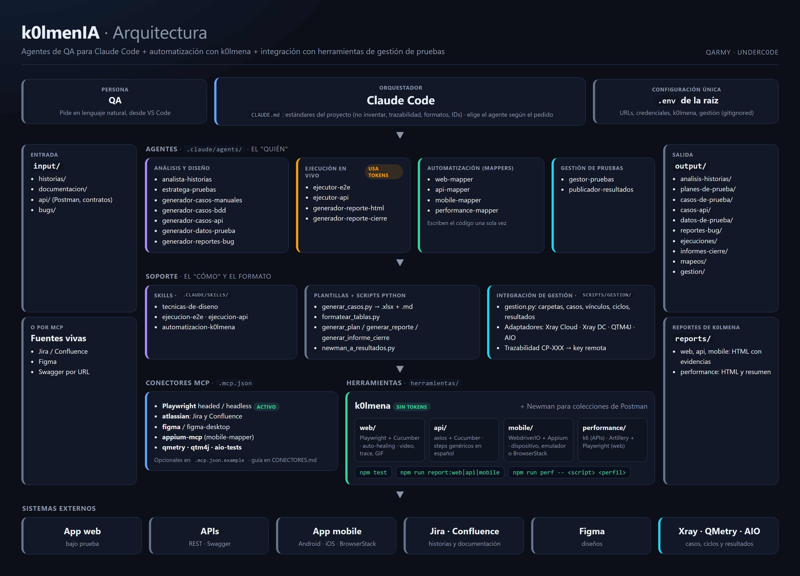
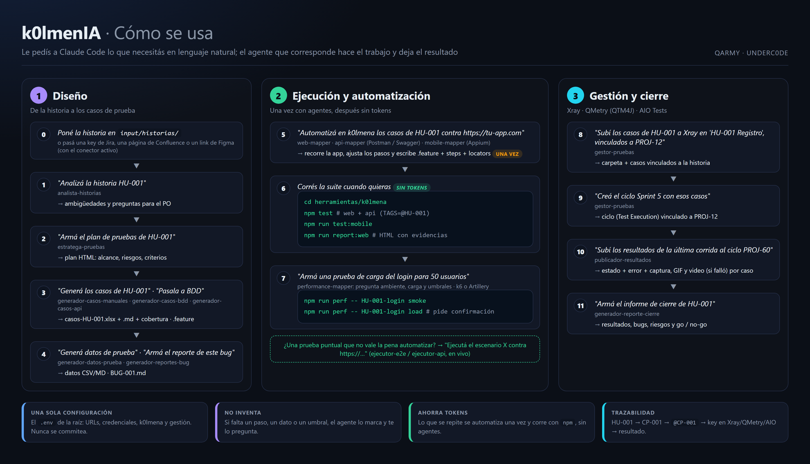

k0lmenIA es un repositorio con un equipo de agentes especializados en QA para Claude Code. Está pensado para profesionales de testing manual: no hace falta saber programar, se trabaja conversando en lenguaje natural dentro de VS Code.
Vos ponés un insumo (una historia, una observación de bug, un contrato de API, o directamente una key de Jira o un link de Figma), le pedís a Claude Code lo que necesitás, y el agente que corresponde genera el resultado: análisis, planes, casos en Excel o Gherkin, datos, bugs, reportes HTML, automatización y carga en la herramienta de gestión.
| Etapa | Qué resuelve | Dónde queda |
|---|---|---|
| 1. Diseño | Analizar historias, planificar, escribir casos manuales, BDD y de API, generar datos y redactar bugs. | output/ |
| 2. Ejecución y automatización | Ejecutar en vivo, o automatizar con k0lmena una sola vez y correr las suites con npm sin gastar tokens. Incluye pruebas de performance. | herramientas/k0lmena/ |
| 3. Gestión y cierre | Subir casos y ciclos a Xray, QMetry o AIO Tests, publicar resultados con evidencias y armar el informe de cierre. | Tu herramienta de gestión + output/ |
HU-XXX) o el contrato del que sale, y cada caso automatizado lleva el ID del caso manual (@CP-001)..env de la raíz, que nunca se versiona; los agentes nunca piden tokens por el chat.
| Pieza | Qué es | Dónde |
|---|---|---|
| Claude Code | Orquestador: interpreta el pedido, elige el agente y aplica los estándares de CLAUDE.md. | CLAUDE.md |
| Agentes | El "quién": un especialista por tarea (17 en total). | .claude/agents/ |
| Skills | El "cómo": conocimiento que se carga cuando hace falta (técnicas de diseño, ejecución E2E y de API, convenciones de k0lmena). | .claude/skills/ |
| Plantillas y scripts | Definen el formato de salida (planilla de casos, cobertura, bug) y generan los reportes HTML de forma determinística. | plantillas/, scripts/ |
| Integración de gestión | gestion.py con un adaptador por herramienta: Xray Cloud, Xray Server/DC, QTM4J y AIO Tests. | scripts/gestion/ |
| Conectores MCP | Conexiones a sistemas externos: Playwright (activo), Jira y Confluence, Figma, Appium, QMetry y AIO Tests. | .mcp.json, .mcp.json.example |
| Herramientas | Newman para colecciones de Postman y k0lmena para la automatización web, API, mobile y performance. | herramientas/ |
| Entrada y salida | Insumos del usuario y artefactos generados, ordenados por tipo. | input/, output/ |

input/ (o pasá una key de Jira, una página de Confluence o un link de Figma con el conector activo).output/ o en herramientas/k0lmena/.npm test, sin tokens.| Paso | Le pedís | Obtenés |
|---|---|---|
| 1 | "Analizá la historia HU-001" | Ambigüedades y preguntas para el PO |
| 2 | "Armá el plan de pruebas de HU-001" | Plan HTML |
| 3 | "Generá los casos de HU-001" | casos-HU-001.xlsx + cobertura |
| 4 | "Subí los casos a Xray en 'HU-001 Registro', vinculados a PROJ-12, y creá el ciclo Sprint 5" | Casos y ciclo en Xray |
| 5 | "Automatizá en k0lmena los casos de HU-001 contra https://tu-app.com" | .feature + steps + locators |
| 6 | npm test y npm run report:web | Reporte HTML con evidencias |
| 7 | "Subí los resultados al ciclo del Sprint 5" | Estados y evidencias en Xray |
| 8 | "Armá una prueba de carga del login para 20 usuarios" | Script k6/Artillery + reporte HTML |
| 9 | "Armá el informe de cierre de HU-001" | Go / no-go |
| Agente | Qué hace | Salida |
|---|---|---|
analista-historias | Analiza historias y criterios de aceptación: ambigüedades, vacíos, riesgos y preguntas de refinamiento. | output/analisis-historias/ |
estratega-pruebas | Plan de pruebas (alcance, riesgos, tipos de prueba, entorno, criterios) como dashboard HTML. | output/planes-de-prueba/ |
generador-casos-manuales | Casos en Excel y Markdown + informe de cobertura con preguntas para el PO. | output/casos-de-prueba/manuales/ |
generador-casos-bdd | Escenarios Gherkin (keywords en inglés, contenido en español) + cobertura por criterio. | output/casos-de-prueba/bdd/ |
generador-casos-api | Casos de API (positivos, negativos, schema, autorización) desde un contrato. | output/casos-api/ |
generador-datos-prueba | Datos válidos, inválidos y de borde (Markdown o CSV). | output/datos-de-prueba/ |
generador-reportes-bug | Reporte de bug profesional según la plantilla, con severidad y prioridad justificadas. | output/reportes-bug/ |
| Agente | Qué hace | Salida |
|---|---|---|
ejecutor-e2e | Ejecuta casos o escenarios en un navegador real con Playwright MCP (headed o headless), con evidencia. | output/ejecuciones/ |
ejecutor-api | Corre una colección de Postman con Newman. | output/ejecuciones/ |
generador-reporte-html | Dashboard HTML de los resultados de una ejecución. | output/ejecuciones/ |
generador-reporte-cierre | Informe de cierre de la ronda: resultados, bugs, riesgos y go/no-go. | output/informes-cierre/ |
| Agente | Qué hace | Salida |
|---|---|---|
web-mapper | Recorre la web siguiendo los casos y genera .feature, steps y locators. | k0lmena/web/ |
api-mapper | Lee Postman o Swagger/OpenAPI, verifica los endpoints y genera los .feature de API. | k0lmena/api/ |
mobile-mapper | Recorre la app con Appium siguiendo los casos y genera .feature, steps y locators. | k0lmena/mobile/ |
performance-mapper | Pruebas de carga, estrés, soak y picos con k6 o Artillery; pregunta carga y umbrales. | k0lmena/performance/ |
| Agente | Qué hace | Salida |
|---|---|---|
gestor-pruebas | Crea carpetas y casos en Xray, QMetry (QTM4J) o AIO Tests, los vincula a la historia, crea ciclos y les agrega casos. | La herramienta + output/gestion/ |
publicador-resultados | Sube los resultados de npm test al ciclo: estado, error y evidencias. | La herramienta |
| Para… | Necesitás |
|---|---|
| Usar los agentes | Claude Code y una cuenta de Claude (Pro, Max, Team o Enterprise) o acceso por API de Anthropic. VS Code recomendado. |
| Generar casos, reportes y usar la gestión | Python 3 con openpyxl, tabulate y requests (pip install -r requirements.txt). |
| Ejecutar E2E en vivo | Node.js 18+ y los navegadores de Playwright. |
| Ejecutar API con Newman | Newman (npm install -g newman). |
| Automatizar con k0lmena | Node.js 20+. |
| Automatizar mobile | Node.js 22+, JDK y Android SDK, o macOS con Xcode para iOS; o una cuenta de BrowserStack. |
curl -fsSL https://claude.ai/install.sh | bash # macOS / Linux npm install -g @anthropic-ai/claude-code # alternativa con Node.js 18+ claude --version
En Windows, seguí la guía oficial en docs.claude.com/en/docs/claude-code/overview.
git clone https://github.com/underc0delabs/k0lmenIA.git
cd k0lmenIA
pip install -r requirements.txt
cp .env.example .env # y completalo (sección 6)
code .
claude # en la terminal integrada; la primera vez pide autenticarte
npx playwright install # ejecución E2E en vivo npm install -g newman # ejecución de colecciones de Postman cd herramientas/k0lmena npm install # k0lmena npx playwright install chromium npm run bootstrap:k6 # solo para performance de APIs con k6
Hay un solo .env, en la raíz del repo. Lo usan los agentes, k0lmena y los scripts de gestión. Está en .gitignore y nunca se sube. La plantilla comentada es .env.example.
| Grupo | Variables | Para qué |
|---|---|---|
| App bajo prueba | APP_URL, APP_USER, APP_PASSWORD | Ejecución E2E y logins de la automatización |
| API | API_TOKEN, API_BASEURL | Newman, suite de API y k6 |
| k0lmena web | BASEURL (vacía = APP_URL), BROWSER, HEADLESS, VIEWPORT_WIDTH, VIEWPORT_HEIGHT, LOCALE, TIMEZONE | Navegador de la suite web |
| Ejecución | TAGS, PARALLEL | Qué escenarios y cómo se corren |
| Evidencias | EVIDENCE (captura, ambos, off; vacía = se pregunta), VIDEO, TRACE | Qué se adjunta al reporte |
| Auto-healing | K0LMENA_AUTO_HEALING (off, learn, heal, on) | Recuperar locators rotos |
| Mobile | MOBILE_TARGET, MOBILE_PLATFORM, MOBILE_DEVICE_NAME, MOBILE_APP, MOBILE_UDID, BROWSERSTACK_* | Dónde corre la suite mobile |
| Performance | PERF_VUS, PERF_DURACION (opcionales) | Pisar la carga de los scripts k6 |
| Gestión | GESTION_HERRAMIENTA, GESTION_PROYECTO + credenciales (XRAY_CLOUD_* y JIRA_*, XRAY_DC_*, QTM4J_* o AIO_API_TOKEN) | Xray, QMetry y AIO Tests |
.env: nunca pegues un token en el chat ni lo escribas en un archivo versionado.| Carpeta | Qué va |
|---|---|
input/historias/ | Historias de usuario con sus criterios de aceptación (HU-001.md, …). |
input/documentacion/ | Documentación del producto que sirva de contexto. |
input/api/ | Contratos de API, colecciones de Postman y environments (incluye una de ejemplo). |
input/bugs/ | Observaciones sueltas de errores para convertir en reportes. |
analista-historiasRevisa cada criterio de aceptación y entrega analisis-HU-001.md con ambigüedades, vacíos, riesgos, casos no contemplados y preguntas de refinamiento para el PO.
estratega-pruebasDashboard HTML en modo oscuro con alcance, objetivos, tipos de prueba, riesgos, datos y entorno, y criterios de entrada y salida.
generador-casos-manualesEntrega casos-HU-001.xlsx (la planilla, con el formato de plantillas/plantilla-casos-prueba.xlsx), casos-HU-001.md y casos-HU-001-cobertura.md. Cubre camino feliz, negativos, bordes y validaciones. Esta planilla es la que después se sube a la herramienta de gestión o se automatiza.
generador-casos-bddGenera HU-001-<slug>.feature (un tag @CP-XXX por escenario) y HU-001-cobertura.md.
generador-casos-apiTabla resumen y detalle de cada caso: método, endpoint, headers, body, status y schema esperado.
Los datos incluyen válidos, inválidos y de borde. El bug sigue plantillas/plantilla-reporte-bug.md (editala para usar tu formato) y marca lo que falta en vez de inventarlo.
ejecutor-e2e y ejecutor-apiEl ejecutor E2E pregunta si querés ver el navegador, ejecuta con Playwright MCP, saca evidencia y genera reporte-HU-001-<fecha-hora>.html. El de API corre la colección con Newman. Ideal para pruebas puntuales; lo que se repite conviene automatizarlo.
Dashboards con indicadores, gráficos y detalle; el informe de cierre agrega bugs abiertos, riesgos y la recomendación go/no-go.
k0lmena es el framework de automatización integrado en herramientas/k0lmena/: web (Playwright + Cucumber), API (axios + Cucumber), mobile (WebdriverIO + Appium) y performance (k6 y Artillery). Un agente mapper recorre la aplicación una sola vez para verificar los casos y escribe la automatización; desde ahí, la suite corre con npm sin agentes y sin tokens. Las carpetas vienen vacías: todo lo generan los mappers para tu aplicación.
web/features/HU-001-<slug>.feature, web/steps/HU-001.steps.ts y web/locators/HU-001.locators.ts, reutilizando steps existentes.npm run test:web y deja output/mapeos/mapeo-HU-001-web.md (pasos mapeados, ajustados y bloqueados).Si un paso no se puede ejecutar, el escenario queda @bloqueado con el motivo y no corre hasta que se resuelva.
Lee Postman (v2.x) o Swagger/OpenAPI, muestra los endpoints para elegir, diseña escenarios positivos, negativos y de autorización, los verifica contra la API real y escribe los .feature con los steps genéricos en español del framework. Antes de un POST, PUT, PATCH o DELETE pide autorización.
Necesita el conector Appium MCP y la app en mobile/apps/ (no se versiona). Después la suite corre sin MCP en:
| MOBILE_TARGET | Qué necesitás |
|---|---|
device | Dispositivo por USB con depuración y MOBILE_UDID (sale de adb devices). |
emulator | Emulador o simulador encendido y MOBILE_DEVICE_NAME. |
browserstack | BROWSERSTACK_USER, BROWSERSTACK_KEY y BROWSERSTACK_APP (bs://…). |
cd herramientas/k0lmena npm test # web + API npm run test:web | test:api | test:mobile | test:all TAGS=@HU-001 npm test # bash: filtrar por tag $env:TAGS="@HU-001"; npm test # PowerShell npm run report:web | report:api | report:mobile # reporte HTML de la última corrida
Si EVIDENCE está vacía, npm test pregunta al arrancar qué guardar de los tests que pasan: solo captura, o captura + GIF del recorrido.
| Suite | Escenario que pasa | Escenario que falla |
|---|---|---|
| Web | Captura final (+ GIF opcional) | Video completo, captura, error con stack, URL y título, logs del navegador (consola, errores JS, requests fallidos, HTTP ≥ 400), logs de Node y trace de Playwright |
| API | Request y response (el Authorization se oculta) | Lo mismo, más la validación que falló |
| Mobile | Captura final (+ GIF opcional) | Video completo, captura, page source y logs del dispositivo |
| Comando | Para qué |
|---|---|
npm run crawler [url] | Genera un archivo de locators recorriendo una página. |
npm run link-tester | Busca enlaces e imágenes rotas en BASEURL. |
npm run record | Graba un flujo con Playwright codegen. |
npm run debug | Corre la suite web en modo debug. |
Con K0LMENA_AUTO_HEALING=on, si un locator deja de funcionar, k0lmena prueba alternativas aprendidas y lo informa como HEALED: <original> -> <candidato>.
output/mapeos/mapeo-HU-XXX-performance.md.npm run perf # lista los scripts npm run perf -- <script> smoke # valida el script con carga mínima npm run perf -- <script> load # carga objetivo (pide confirmación) npm run perf -- <script> stress --confirmar # sin pregunta: CI o autorización previa npm run perf -- <script> load --vus 20 --duracion 2m # k6: pisa la carga
| Perfil | Qué hace |
|---|---|
smoke | Carga mínima para validar que el script funciona. |
load | Sube hasta la carga objetivo, la sostiene y baja. |
stress | 1x, 2x y 3x la carga objetivo: busca el punto de quiebre. |
soak | Carga objetivo durante mucho tiempo: fugas de memoria y degradación. |
spike | Salto brusco a un pico y vuelta: cómo se recupera. |
Cada corrida deja en reports/performance/<k6|artillery>/ un reporte HTML (veredicto, requests, req/s, errores, latencias p50/p95/p99, umbrales con el valor medido, detalle por endpoint o paso, códigos de respuesta, checks, errores y, en Artillery, la evolución en el tiempo), un resumen JSON, el resultado crudo y el log. Si un umbral no se cumple, el comando termina con error.
Los agentes gestor-pruebas y publicador-resultados trabajan con Xray Cloud, Xray Server/Data Center, QMetry para Jira (QTM4J) Cloud y AIO Tests, con los mismos comandos para todas. Se configura en el .env: GESTION_HERRAMIENTA (xray-cloud, xray-dc, qtm4j o aio), GESTION_PROYECTO (key de Jira) y las credenciales de la herramienta. En los comandos, las carpetas van sin barra inicial (en Git Bash, /HU-001 se convierte en una ruta de Windows); referencia completa en scripts/gestion/README.md.
Crea la carpeta, sube los casos (manuales desde el .xlsx o BDD desde el .feature), los vincula a la historia, crea ciclos y les agrega casos. La primera vez hace una prueba en seco (--dry-run). Guarda la trazabilidad en output/gestion/HU-001-<herramienta>.json: un caso nunca se sube dos veces.
Lee el reporte de k0lmena, asocia cada escenario a su caso por el tag @CP-XXX y carga el estado, un comentario con el error y las evidencias: captura siempre, GIF si se generó y video solo si falló. Nunca asigna un resultado por aproximación.
| Concepto | Xray | QTM4J | AIO Tests |
|---|---|---|---|
| Caso | Issue Test (Manual o Cucumber) | Test case | Caso (Classic o BDD) |
| Ciclo | Test Execution | Test cycle | Test cycle |
| Caso ↔ historia | Link "Test" (cobertura) | Requirement link | jiraRequirementIDs |
| Ciclo ↔ historia | Link "Relates" | Requirement link | jiraTaskIDs |
python scripts/gestion/gestion.py --dry-run carpeta --ruta "HU-001 Registro" python scripts/gestion/gestion.py subir-casos --origen <casos.xlsx> --carpeta "HU-001 Registro" --historia PROJ-12 --traza HU-001 python scripts/gestion/gestion.py crear-ciclo --nombre "Sprint 5" --historia PROJ-12 --traza HU-001 python scripts/gestion/gestion.py extraer-resultados --reporte <cucumber-report.json> python scripts/gestion/gestion.py publicar-resultados --ciclo PROJ-60 --resultados <resultados.json> --traza HU-001
Los servers MCP conectan a Claude Code con sistemas externos. .mcp.json trae activo Playwright (headed y headless). Los demás están en .mcp.json.example:
| Conector | Para qué | Autenticación |
|---|---|---|
atlassian | Jira y Confluence: leer historias, criterios y documentación funcional directamente. | Cuenta (OAuth) |
figma / figma-desktop | Leer diseños desde un link a un frame o archivo: textos, estados y componentes para diseñar casos o comparar la app con el diseño. Requiere asiento Full o Dev. | Cuenta (OAuth) |
appium-mcp | Lo usa el mobile-mapper para recorrer la app. | ANDROID_HOME |
qmetry / qtm4j | Consultar QMetry desde el chat. | API key |
aio-tests | Consultar AIO Tests desde el chat. | Token |
.mcp.json.example a .mcp.json.enabledMcpjsonServers en .claude/settings.local.json.claude. Atlassian y Figma se autorizan con tu cuenta desde /mcp./mcp.Con atlassian o figma activos, cualquier agente acepta como insumo una key de Jira, una página de Confluence o un link de Figma:
Para Xray no hace falta MCP: se usa scripts/gestion/. Guía completa en CONECTORES.md.
| Elemento | Formato |
|---|---|
| Historias | HU-001 |
| Criterios de aceptación | CA1, CA2 |
| Casos manuales | CP-001 |
| Casos de API | CP-API-001 |
| Bugs | BUG-001 |
| Escala | Valores |
|---|---|
| Severidad y prioridad | Crítica · Alta · Media · Baja |
| Estado de un caso | N/A · Pendiente · En ejecución · Aprobado · Fallido · Bloqueado |
@HU-001 @web, @api, @mobile).@CP-001, @CP-API-001) y @Smoke si es crítico.@bloqueado: un paso no se pudo verificar; el escenario no se ejecuta.| Artefacto | Nombre |
|---|---|
| Análisis | analisis-HU-001.md |
| Casos manuales | casos-HU-001.xlsx + .md + -cobertura.md |
| Casos BDD | HU-001-registro.feature + HU-001-cobertura.md |
| Bug | BUG-001.md |
| Automatización | <tipo>/features/HU-001-<slug>.feature, steps/HU-001.steps.ts, locators/HU-001.locators.ts |
| Performance | performance/k6/http/HU-001-<slug>.ts o performance/artillery/HU-001-<slug>.yaml |
| Reporte de mapeo | output/mapeos/mapeo-HU-001-<web|api|mobile|performance>.md |
Las tablas de los .md que generan los agentes se normalizan con python scripts/formatear_tablas.py <archivo>, sin emojis en las celdas.
k0lmenIA/
├── CLAUDE.md Contexto y estándares (Claude Code lo lee siempre)
├── ARQUITECTURA.md Cómo crece el repo
├── CONECTORES.md Cómo activar los conectores MCP
├── .env.example Plantilla de variables (copiar a .env)
├── .mcp.json Conexiones MCP activas (Playwright)
├── .mcp.json.example Conectores opcionales
├── requirements.txt Dependencias de Python
├── docs/ Esta documentación (PDF e imágenes) y sus fuentes
├── .claude/
│ ├── agents/ Los 17 agentes
│ └── skills/ Los 4 skills (diseño, ejecución E2E y API, k0lmena)
├── input/ historias/, documentacion/, api/, bugs/
├── output/ Lo que generan los agentes
├── plantillas/ Reporte de bug, planilla de casos, cobertura
├── scripts/ Casos, reportes HTML, plan, informe de cierre, tablas
│ └── gestion/ Xray, QMetry (QTM4J) y AIO Tests
└── herramientas/
├── newman/ Colecciones de Postman
└── k0lmena/
├── web/ features/ steps/ locators/ + framework
├── api/ features/ steps/ (comunes.steps.ts)
├── mobile/ features/ steps/ locators/ support/ apps/
├── performance/ k6/http/ y artillery/
├── reports/ Reportes HTML
├── run-tests.js Runner de npm test
└── run-perf.js Runner de npm run perf
| Problema | Solución |
|---|---|
| Un agente nuevo no aparece | Reiniciá Claude Code: los agentes se cargan al iniciar la sesión. |
| La suite web falla con viewport 0x0 o sin URL | Falta el .env de la raíz o sus variables de k0lmena: cp .env.example .env y completalo. |
npm test corre 0 escenarios | Todavía no automatizaste nada (las carpetas vienen vacías) o el filtro TAGS no coincide. |
| Un escenario nunca se ejecuta | Tiene @bloqueado; el motivo está en un comentario arriba del escenario. |
| No encuentro k6 | npm run bootstrap:k6 en herramientas/k0lmena/ o k6 en el PATH. |
npm run perf no corre un perfil con carga desde el agente | Es a propósito: fuera de una terminal interactiva hace falta --confirmar, que el agente agrega solo después de tu confirmación. |
Una carpeta de Xray/QMetry/AIO aparece como C:/Program Files/Git/… | En Git Bash escribí las carpetas sin / inicial. |
| Un conector MCP no conecta | Las variables tienen que estar en el entorno donde lanzás claude; para Atlassian y Figma, autorizá desde /mcp. |
| Falta una librería de Python | pip install -r requirements.txt |
.claude/agents/mi-agente.md con frontmatter name y description. La descripción es lo que usa Claude Code para decidir cuándo invocarlo.plantillas/ o su script en scripts/, y su carpeta en output/..md, normalizalas con formatear_tablas.py..claude/skills/ con su SKILL.md; se carga solo cuando hace falta..mcp.json; los tokens siempre como ${VARIABLE}.herramientas/ con su README.El detalle está en ARQUITECTURA.md.
node docs/fuente/generar.js # requiere k0lmena instalado (usa su Playwright)
Genera docs/k0lmenIA-arquitectura.png, docs/k0lmenIA-uso.png y docs/k0lmenIA-documentacion.pdf a partir de los HTML de docs/fuente/.
Licencia MIT — © 2026 QARMY. k0lmena es un proyecto open source de Danilo Vezzoni, con Gianella Vezzoni, Maximiliano Pintos y Yanko Leta. Hecho por la comunidad de Underc0de.